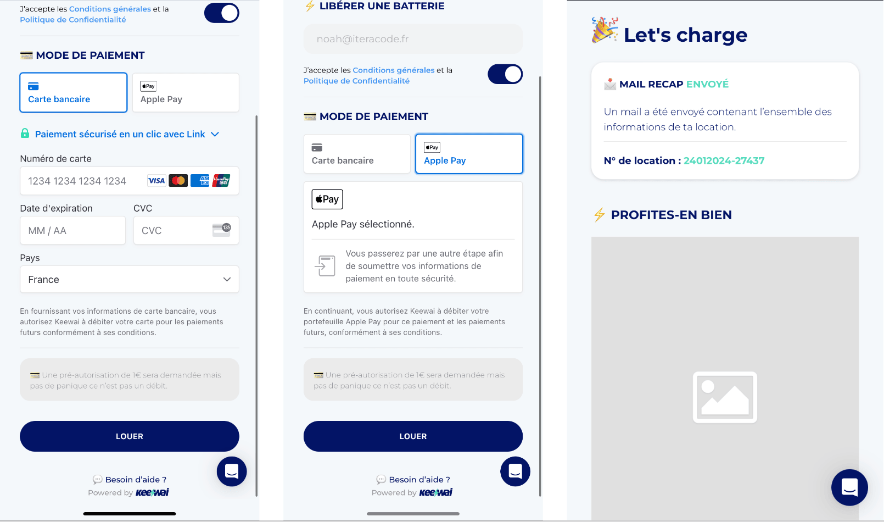
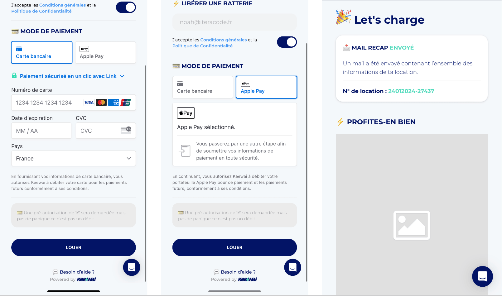

Keewai
 


Client : Keewai est une entreprise spécialisée dans la recharge de téléphones portables.
Besoin du Client :
Offrir une solution pratique permettant aux utilisateurs de louer des batteries portables, améliorant leur expérience lors d'événements et dans les lieux publics.
Solution Proposée et Caractéristiques du Projet :
Conception et gestion d’une application pour la location de batteries portables via des bornes de rechargement utilisant une intégration par QRCode. Les utilisateurs scannent un QRCode pour accéder à l'application, effectuer un paiement sécurisé et déverrouiller une batterie. L'application gère les afflux massifs grâce à une file d'attente et utilise une API pour communiquer en temps réel avec les bornes, assurant une gestion centralisée des opérations.
Caractéristiques du Projet :
- Location de batteries par QRCode
- Processus de paiement sécurisé
- Déverrouillage de la batterie sur la borne
- File d'attente pour gérer les afflux d'utilisateurs
- API pour la communication avec les bornes
Défis et Solutions :
Le développement de Keewai a présenté le défi majeur de concevoir une infrastructure robuste capable de gérer efficacement la communication avec les bornes, ainsi que de mettre en place une file d'attente pour gérer les pics d'utilisation. Ces défis ont été relevés grâce à une architecture système bien pensée et à une conception adaptative.
Compétences :
- A.3. Mise en place d'un plan d'activités
- E.2. Gestion des projets et du portefeuille de projets
- A.4. Planification des produits/services
- A.6. Conception des applications
- D11. Identification des besoins
- B.5. Production de la documentation
- E.4. Gestion de la relation client
- B.3. Tests
Technologies utilisés pour le développement du projet :
- SASS
- Typescript
- Vue
- NodeJS
Outils utilisés pour la conception et la gestion du projet :
- Trello
- Excel
- Word
- Lucidchart